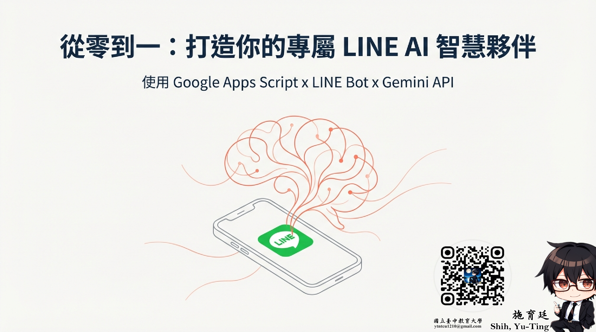
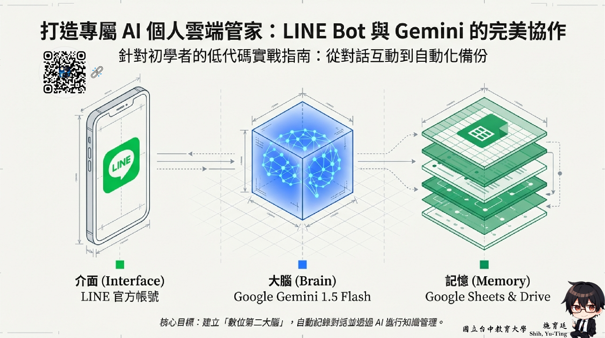

學習目標
- 理解聊天機器人、AI Agent 與一般問答工具的差異。
- 辨識互動服務設計中的入口、記憶、資料來源與責任邊界。
- 提出一個互動服務原型。
- 設計服務失敗時的人工接手流程。
核心概念
代理型應用的關鍵，不只是會回答，而是會根據規則協助完成一連串任務。這意味著設計者必須比單純做提示詞時更清楚地界定服務範圍、資料來源、權限限制與錯誤處理。若這些邏輯沒有被定義清楚，AI 服務就很容易在真實情境中失控，尤其在教學、行政與諮詢領域更是如此。
圖片與案例圖

這張封面適合用來說明：互動服務的入口可以是使用者熟悉的聊天平台，而不是獨立系統。

這張圖把介面、模型與記憶層放在同一頁，能直接拿來說明 Agent 服務的組成邏輯。
服務設計思考
設計 AI 互動服務時，可以先回答五個問題：誰是主要使用者？他最常遇到的問題是什麼？系統需要哪些資料才能回答？遇到不知道或不能回答的內容時，應該怎麼回應？最後，誰要為錯誤答案負責？這五個問題能幫助學習者意識到，互動服務設計不只是功能堆疊，而是責任設計。
此外，AI Agent 與傳統聊天機器人的差異，也值得在課堂中清楚說明。聊天機器人通常偏向問答；代理系統則更偏向任務執行、流程銜接、工具調用與多步處理。因此，當學生說自己要做一個 AI Agent 時，教師可以先請他重新描述：這個系統究竟只是回答問題，還是真的要完成一串任務？
應用情境
情境一：校園資訊問答助手
如果服務範圍只是回答常見規則與流程，那麼重點在知識更新與回應準確度。
情境二：課程輔助機器人
若系統需要根據學生提問推薦資源、安排學習路徑，就已經開始接近代理型任務，需要更明確的判斷邏輯。
情境三：行政預約或回報系統
一旦牽涉表單提交、資料寫入與通知流程，服務設計就必須納入例外處理與權限控制。
課堂活動
活動一：服務場景設計
選一個校園或工作現場情境，定義使用者、常見問題與服務流程。
活動二：例外情境演練
思考當 AI 回錯、查不到或遇到敏感問題時，服務應如何回應與轉交。
活動三：角色分工表
請學生列出哪些工作由系統自動完成、哪些工作需要人工審核，讓服務責任可視化。
課後任務
完成一份互動服務概念圖，說明使用者需求、資料來源、回應邏輯、人工支援節點，以及至少兩種失敗情境的應對方案。
延伸觀看
這個單元適合搭配頻道裡的聊天機器人、LINE Bot、互動服務或代理流程示範內容一起看，幫助學習者把服務入口、資料來源與責任邊界放進同一個設計框架。